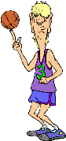
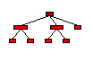
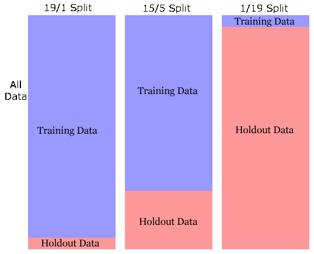
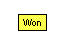
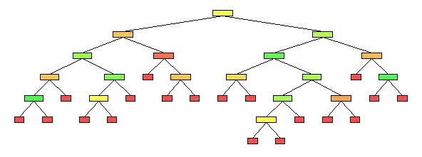
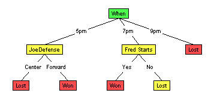

Decision Trees, for fun and profit!
What's the story?
You are in the office pool, currently betting on the outcome of the basketball game next week, between the MallRats and the Chinooks. You have to decide which team will win, then bet on that team. Of course, you could just guess, or flip a coin. Here we present a way that (typically) will do better: by using observations about the past performance of the teams.
Web App
Want to skip the story for now and get right to the web app?
Launch »Introduction
You've been tracking the MallRats over the season, and recorded various information about the previous games. In addition to the obvious logistics about each game:
- The name of the opponent
- Was the game at Home or Away, and
- Was the starting time 5pm, 7pm or 9pm.
You also note some of the "coaching decisions":
- Did Fantastic Fred (FF) start the game; or come in off the bench?
- Did Joe play center (in the MallRat offense), or did he play power forward?
- Did Joe guard the opponent's center, as opposed to one of the opponent's forwards?
- You also note whether that opponent's center was tall (over 6'9") or not.
Finally, you record:
- Who won the game.
The results are shown below:
| Where | When | Fred Starts | Joe offense | Joe defense | Opp C | OutCome |
|---|---|---|---|---|---|---|
| Home | 7pm | Yes | Center | Forward | Tall | Won |
| Home | 7pm | Yes | Forward | Center | Short | Won |
| Away | 7pm | Yes | Forward | Forward | Tall | Won |
| Home | 5pm | No | Forward | Center | Tall | Lost |
| Away | 9pm | Yes | Forward | Forward | Short | Lost |
| Away | 7pm | No | Center | Forward | Tall | Won |
| Home | 7pm | No | Forward | Center | Tall | Lost |
| Home | 7pm | Yes | Center | Center | Talls | Won |
| Away | 7pm | Yes | Center | Center | Short | Won |
| Home | 9pm | No | Forward | Center | Short | Lost |
| Away | 7pm | No | Forward | Forward | Short | Lost |
| Away | 5pm | No | Center | Forward | Tall | Won |
| Home | 7pm | No | Center | Center | Tall | Lost |
| Home | 9pm | No | Forward | Forward | Short | Lost |
| Away | 9pm | Yes | Center | Forward | Short | Lost |
| Home | 7pm | Yes | Center | Center | Short | Won |
| Home | 7pm | Yes | Center | Forward | Short | Won |
| Home | 5pm | No | Forward | Center | Short | Lost |
| Home | 7pm | Yes | Center | Forward | Tall | Won |
| Away | 5pm | No | Center | Center | Tall | Lost |
You know, from various reliable sources, that this championship game will be away (not on the MallRat court), at 9pm, that Fantastic Fred will not start, and that Joe will play center on offense, but will not defend the Chinook's 7'1" center. That is, you know:
| Where | When | Fred Starts | Joe offense | Joe defense | Opp C | Outcome |
|---|---|---|---|---|---|---|
| Away | 9pm | No | Center | Forward | Tall | ?? |
What you don't know, of course, is who will win this game. Of course, it is reasonable to assume that this future game will resemble the past games. Note, however, there are no previous games that match these specific values -- ie, no previous game was exactly
[Where=Away, When=9pm, FredStarts=No, JoeOffense=Center, JoeDefends=Forward, OppC=Tall].
We therefore need to generalize -- by using the known examples to infer the likely outcome of this new situation. But how?
Your turn
Who do you think will win? ... and why?
 Note that the MallRats have split their previous 20 games --- winning 10 and losing 10. So this "overall statistic" does not help. Similarly, they are 4-and-4 on away games -- which also does not help. However, they have lost all 4 of their previous 9pm games, which suggests they will lose this upcoming 9pm game. They have also lost 6 of the 8 games when Fred did not start. However, they are 8-Wins-and-3-Losses when Joe plays center on offense, which suggests they will win this game; and they are [6W, 4L] when the opposing center is over 7'. Or perhaps we should consider some combination: perhaps Joe does a good job defending tall centers, or whatever...
So, if you were going to place a bet, would you bet that the MallRats will win, or not?
Use a Decision Tree
Give up?
Below we present a way to learn a good "predictor", which we can then use to predict whether the MallRats will win any specified game... and in particular, to predict who will win this MallRat/Chinook game.
We first need to present some notation: We view this predictor as a "classifier", as it is classifying this future game into either the "Won" or the "Lost" class. We will also view each game description, such as
[Where=Away, When=9pm, FredStarts=No, JoeOffense=Center, JoeDefense=Forward, OppC=Tall]
as an instance , composed of a set of Attribute=Value assignments (eg, Where is an attribute, and Away is its associated value). (Note this also corresponds to a database record .) As we did not indicate the outcome of this game we call this an " unlabeled instance "; the goal of a classifier is finding the class label for such unlabeled instances. An instance that also includes the outcome is called a " labeled instance " -- eg, the first row of the table...
| Instance # | Where | When | FredStarts | Joe offense | Joe defense | Opp C | OutCome |
|---|---|---|---|---|---|---|---|
| 1 | Home | 7pm | Yes | Center | Forward | Tall | Won |
...corresponds to the labeled instance:
[Where=Home, When=7pm, FredStarts=Yes, JoeOffense=Center, JoeDefense=Forward, OppC=Tall, Outcome=Won]
Decision Trees
In general, a decision tree is a tree structure ; see figure below.
Like biological trees, our Computer Science trees also have a single root, whose branches lead to various subtrees, which themselves may have have sub-subtrees, until terminating in leaves. A computer science tree, however, grows upside-down: its root is at the top, and its branches go down. Go figure.
Technically: a tree is a set of nodes and arcs , where each arc "descends" from a node to the children of that node; in the figure above, the "FredStarts" node has 2 arcs: one going to the left-most "Won" node (via the "Yes"-arc), and another going (via the "No"-arc) to the "JoeOffense" node. That "JoeOffense" node is itself the root of a subtree, as it has children "Won" and "Lost". Nodes that are not leaves -- both the root "FredStarts", as well as "JoeOffense" --- are called internal nodes.)
Note each unlabeled instance (remember "instance" -- see above) corresponds to a path through the tree, from the root to a leaf: eg, the instance representing the upcoming MallRat/Chinook game will go "right" at the root, as Fantastic Fred is not starting, then go left at the JoeOffense node, as Joe is playing center on offence. This will end on the "Won" leaf node. That is, this tree is asserting its guess that the MallRats will win this game.
Of course, this is just the opinion of this single tree. Note the data has a different opinion: there are 4 previous games where "Fred did NOT start and Joe played Center on offense", and the MallRats won only 2 of these 4 ! Similarly, the "FredStarts = Yes" branch points to a "Lost" node; note however the MallRats actually WON 8 of 10 games where Fred started.
This information clearly lessens our confidence that this specific tree is correct, as we naturally assume that these previous games should be relevant. Our task, then, is:
How to use a data set (such as the records from the previous games) to LEARN an accurate decision tree?
We will then use that learned tree to "classify" a new example: here, to determine whether the MallRats will win this upcoming game; see figure below.
Learning Decision Trees
A decision tree needs to decide when to split on which attributes. In particular, what is the appropriate root (ie, top-most) attribute? Should it be "FredStarts" or "JoeOffense" or "Where" or ... ?
It is then clear which records (ie, previous games) go to which child: eg, if the root was "FredStart", the records for all 10 "FredStart" games go left (following the "Yes" arc)
| Where | When | Fred Starts | Joe offense | Joe defends | Opp C | OutCome |
|---|---|---|---|---|---|---|
| Home | 7pm | Yes | Center | Forward | Tall | Won |
| Home | 7pm | Yes | Forward | Center | Short | Won |
| Away | 7pm | Yes | Forward | Forward | Tall | Won |
| Away | 9pm | Yes | Forward | Forward | Short | Lost |
| Home | 7pm | Yes | Center | Center | Tall | Won |
| Away | 7pm | Yes | Center | Center | Short | Won |
| Away | 9pm | Yes | Center | Forward | Short | Lost |
| Home | 7pm | Yes | Center | Center | Short | Won |
| Home | 7pm | Yes | Center | Forward | Short | Won |
| Home | 7pm | Yes | Center | Forward | Tall | Won |
and the other 10 "Fred didn't start" games all go right.
Another question is "When to stop?". For example, after following the "FredStarts = Yes" arc from the root, we could stop here. Note, however, that the MallRats won 8 of these 10 games, and lost the remaining 2. While this does suggest the MallRats will win in this situation, there are counter-examples, which suggests we should ask some other question here. Here, if we ask " Where ", we see that the MallRats won all 6 of the Where=Home games that Fred started; see below:
| Where | When | Fred Starts | Joe offense | Joe defends | Opp C | OutCome |
|---|---|---|---|---|---|---|
| Home | 7pm | Yes | Center | Forward | Tall | Won |
| Home | 7pm | Yes | Forward | Center | Short | Won |
| Away | 7pm | Yes | Forward | Forward | Tall | Won |
| Away | 9pm | Yes | Forward | Forward | Short | Lost |
| Home | 7pm | Yes | Center | Center | Tall | Won |
| Away | 7pm | Yes | Center | Center | Short | Won |
| Away | 9pm | Yes | Center | Forward | Short | Lost |
| Home | 7pm | Yes | Center | Center | Short | Won |
| Home | 7pm | Yes | Center | Forward | Short | Won |
| Home | 7pm | Yes | Center | Forward | Tall | Won |
On this branch, we can confidently stop, and produce a "Won" label; see tree. The idea here is to continue splitting until "purity" -- ie, until all of the records that reach the node have the same label. We then create a leaf node, whose value is that label (here, " Won ").
Actual Demo
So, for now, the only issue is deciding which attribute to test. How?
Why not just chose attributes randomly ? To find out...
- Run the web app by selecting "Initialize" and then "Run" from the "Algorithm" menu. (Be sure the title above the table (on top left of top-left "Dataset" panel) says "Basketball Training Examples", and that the "Splitting Function" (under the "Algorithm" menu) is set to "Random".) If you can't see the entire tree, right-click on the tree panel -- a popup menu will appear. Select "Full Panel Tree View" to expand the panel to full size.
- Don't worry about how the actual algorithm is running -- we'll discuss that later.
Random Splits
The tree produced probably looked something like this...
This one has a total of 22 nodes, including 10 internal (splitting) nodes.
Why not split Randomly?
As you saw, the tree can grow huge when the splits are done randomly. These trees are hard to understand, and can be difficult to store. And as you may have noticed, different runs will produce different answers. (Wanna try it? Choose "Initialize" and then "Run" from the "Algorithm" menu).
It is known that larger trees are typically less accurate than smaller trees. (Look into "Occam" algorithms and "No Free Lunch" papers to learn more.)
How then can we produce small trees? Before we provide one approach, we encourage you to try it on your own.
You can use the web app to do this: The general "Decision Tree learning algorithm" ( LearnDT ) grows a decision tree one node at a time. At each time, it considers the set of records that reach a specific location, based on the "path" to this point --- which corresponds to a sequence of "attribute = value" assignments (eg, [FredStarts=No, JoeOffence=Forward] ). It then considers each of the remaining attributes, as the possible label for this node --- here, JoeDefends , OppC , ... (But not any of the attributes already encountered on the path to here. Why?)
Your turn!
The web app allows the user to grow a tree: If you left-click at the end of any such path (shown as a blue triangle ), you get the option of selecting which attribute to split on. (This is true at the beginning as well, when bottom "decision tree" screen is blank.) Of course, make sure you're using the "Basketball" dataset.
Your goal is to find a small tree that is "consistent" with the records --- that is, which correctly determines which games were Won, vs Lost?
Can you find a consistent tree with under 10 internal nodes? ... under 8 internal nodes? ... under 5?
Information Gain
Seeking SMALL consistent Decision Trees
As you saw, it can be tricky to find a small consistent decision tree. Below we show a way to automate this process... using Information Theory:
Information Theory
Think of playing "20 questions": I am thinking of an integer between 1 and 1,000 -- what is it? What is the first question you would ask?
You could ask "Is it 752?" Or "Is it a prime number between 123 and 239?". Most people, however, would first ask "Is it between 1 and 500?"
Why? Because this answer provides the most information: It typically makes sense to ask a question that "splits" the remaining options in half, whether the response is "Yes" or "No". (Here, if I answer "Yes", the number is in the range {1,..., 500}, and if I answer "No", the number is in the range {501, ..., 1000}; either way, there are only 500 possible values, which is half of the original 1000.)
This is typically viewed in terms of "entropy", which (here) measures how much MORE information you need before you can identify the integer. (Entropy is basically "minus information".) Initially, there are 1000 possible values, which we assume are equally likely. We therefore need to ask (roughly) 10 more "Yes/No" questions to identify the integer; this is the entropy of this "uniform over 1000 values" distribution.
Given either answer to "Is it between 1 and 500?" question, we need only ask about 9 more "Yes/No" questions; and "9" is the entropy of the remaining "uniform over 500 values" distribution.
Information Gain as Splitting Criteria
We can use this idea to decide on the appropriate "splitting criteria": As discussed above, as the LearnDT algorithm is building the decision tree, it is dividing, and sub-dividing, the set of "training instances" (eg, descriptions of the games) based on the attributes used in the various nodes encountered on the path. Eg, for the figure below: all 20 records reach the root node (labeled "FredStarts"); of these, 10 go right (corresponding to "FredStarts=No") to the node labeled "JoeOffense," etc.
Simple Decision Tree
Each node, therefore, corresponds to the set of records that reach that position, after being filtered by the sequence of "attribute = value" assignments. (Eg, of the 10 records that survive the "FredStarts=No" test at the root, only 4 survive the subsequent "JoeOffence=Center" test to reach the left child of that node.)
LearnDT in general will use these records to decide which attribute to select for that node. It does this by considering each of the eligible attributes --- ie, the ones that have NOT been used in the path to this node. For each such attribute, it computes the "quality" of the split produced by this attribute; it then selects the attribute with the best quality.
One quality measure is "Information Gain": Given a set of records, the quality of each attribute is the average of the entropies of the nodes produced by this split. Well... minus this quantity. (Recall that "information = minus entropy".) That is, we want to gain as much information as possible, to produce a situation where the remaining entropy is as small as possible. ("0 entropy" means that we can identify the integer... we are trying to get to this situation.))
If that made sense, great. Otherwise, feel free to skip the details, and just play with the code:
Now you try it...
Enough talk. What really happens here?
 To try out this criteria: Go back to the web app, but here change the "Splitting Function" to "Gain . Of course, make sure you're viewing the "Basketball" dataset.
"Run" to see the resulting decision tree (Note that is will NOT be the tree shown above). Left-clicking on any node in the tree will highlight the examples from the "Basketball" dataset that reach the node (look for the yellow, highlighted rows in the upper left-hand table).
There are MANY other things you can do using this web app -- eg, adjust the splitting function, grow your own tree, trace the code, watch it running slowly, etc etc etc.
Gain Ratio
You should have seen the following tree:
Notice this tree is much smaller than the tree produced by Splitting Randomly, as it has only 12 nodes, including 5 internal nodes. It is claiming the MallRats win when:
- Joe defends forwards during 5pm games
- Fred starts on 7pm games and
- when Joe plays center on away games that Joe does not start.
We can then use this tree to predict the outcome of the game:
| Where | When | Fred Starts | Joe offence | Joe defense | Opp C | Outcome |
|---|---|---|---|---|---|---|
| Away | 9pm | No | Center | Forward | Tall | ?? |
Following the relevant path, we see the answer is "Lost", as this game will start at 9pm.
Problems with Information Gain
While there are several motivations for using InformationGain as a quality measure, there are also several limitations. One problem is: it tends to prefer attributes with MANY values; ie, it would prefer to split on say the 20-valued "OpponentName" attribute (if we had included it here), over the current 2- or 3-valued attributes. Indeed, it would further prefer to split on "AudienceSize" field, which could have any integer values {1,2,3,..., 150, 151, ..., 1023, 1024, ... }).
Why? The information possible for a k -ary attribute is between 0 and ln k ; this means the values for a binary attribute cannot be larger than ln 2 = 1 , while the largest possible value for a 20-ary attribute is ln 20 == 4.3 , and for a 1024-ary attribute is ln 1024 = 10 .
Note, however, these larger-arity attributes are not necessarily better, even though the InformationGain criteria would prefer them. (Indeed, it is likely that "AudienceSize" may in fact be one of the least important attributes!)
One trick to avoid this specific problem is to use GainRatio , which basically levels the playing field by penalizing the multiple-valued attributes.
Now you try it...
To try out this criteria: Go back to the web app and change the "Splitting Function" to "Gain Ratio" (Recall that you can change the splitting function using the "Splitting Function" submenu under the "Algorithm" menu).
Then choose "Run" from the "Algorithm" menu to see the resulting tree. Or you can "Trace Run", or "Step" or whatever. If you left-click on any unfinished node , you will now get the Gain Ratio score for the attributes, rather than the Gain score.
You can also flip back and forth between these splitting functions while growing the tree.
Cross Validation
You should have produced the tree shown below:
For comparison, the tree grown using InformationGain is:
Evaluating Decision Trees
Hmmm... so now we have 2 different decision trees. Both are correct over the "training cases" --- the set of games whose outcomes we already know. And they have comparable size. Note, however, they give different answers here: The current tree, based on Gain Ratio , claims that the MallRat's will win.
Two different splitting criteria, leading to two different trees, leading to two different outcomes. Which outcome should we predict --- ie, which tree should we believe?
To help address this... recall that our goal is to predict the unknown outcome of a future game --- a challenge which is subtly different from correctly predicting the outcome of the known games. Here, it would be useful to see, for example, whether either tree could correctly predict the outcome of tomorrow's game, between the MallRats and the SnowBlowers. This is not our immediate task, which is to predict the outcome of next week's MallRat/Chinook game; we hope to use it, however, to help us determine which tree seems more correct.
Of course, we need to know the outcome of that MallRat/SnowBlower game, before we can use it in evaluating our two trees... which is not known, as that game has not been played.
However, we can use this basic idea -- of evaluating our learners based on the performance of their trees on unseen examples. The challenge, of course, is finding a source of "unseen examples": examples that the learner has not seen, but which we can see, and then use to evaluate the performance of the various classifiers obtained.
Why not use the examples we already have? For example, rather that train on all 20 games, we could instead train only on the first 19 games --- ie, not show the learner the final game:
| Game# | Where | When | Fred Starts | Joe offence | Joe defense | Opp C | OutCome |
|---|---|---|---|---|---|---|---|
| 20 | Away | 5pm | No | Center | Center | Tall | Lost |
The two learners (using Information Gain and Gain Ratio resp.) would each learn their respective trees based only on the first 19 games. We could then see which tree did best on the (unseen by the learner) 20 th game. Now if we find the InfoGain-based tree was correct on this 20 th game but the GainRatio-based tree was not, we would probably be more inclined to believe that Information Gain worked better than Gain Ratio, at least in this situation. ... and in the situation where we considered all 20 games. We would therefore use the InfoGain-based learner. (Otherwise, if if GainRatio was correct but Gain was not, we would use the Gain Ratio-based tree.)
Cross-Validation
This is the basis for Cross-Validation : giving several learners only a subset of the training sample, then evaluating them on the remaining "hold-out" set. Here, are suggesting the idea of training on 19 records and testing on the 20 th .
To state this more precisely (sorry about the notation): Let IG 19 be the tree learned using the InformationGain splitting criterion, on the first 19 games and GR 19 be the tree learned using the GainRatio splitting criterion, on these 19 games; similarly IG 20 (resp, GR 20 ) is the tree learned using InformationGain (resp, GainRatio) on all 20 games. If IG 19 does well on the "unseen by the learner" 20 th game but GR 19 does not, then we would figure InformationGain seemed like a good idea, and so use IG 20 to classify the upcoming MallRat/Chinook game.
Of course, this only gives the outcome of a single game, and it is quite possible that both learners would be correct here (eg, both claim the MallRats will win) or both would be wrong. ... which would not help us discriminate between the two classifiers IG 19 and GR 19 and hence the two learners (based on Gain and Gain Ratio). It may be better instead to train on, say, the first 15 games, then compare the resulting decision trees on the remaining 5 games --- ie, determine the relative scores of IG 15 and GR 15, over these final 5 games. See chart.

This latter approach would give us a fairly accurate measure of the quality of the 2 decision trees produced (based on Gain and GainRatio). Wny not go even further, and train on 1 game, then test on the remaining 19? This would provide an even more accurate measure of the quality of the 2 decision trees produced, IG 1 based on Gain and GR 1 based on GainRatio. However, those two trees would (we expect) be worse than the trees produced using all 20 examples; that is we expect IG 1 to be less accurate than IG 15 , which in turn is less accurate than IG 20 ; and similarly GR 1 is inferior to GR 15 will is inferior to GR 20 .
Why less accurate? Our learning task has a lot in common with "estimating" some quantity --- eg, estimating the height of typical adult men. If we examine only one or two men, we are not likely to see a representative sample of men, and so the empirical average of the observed heights may not be correct. However, as we see more and more men, the empirical average is more and more likely to be close to the true average height. That is, we expect to get better estimates with more examples; in our current learning context, we similarly expect that IG 20 will be superior to IG 15.
Size of Holdout Set
The only reason to use IG 15 , rather than IG 20 , is to help us contrast Gain versus Gain Ratio, as that means we have labeled instances "left over", which we use to evaluate the different learners. We still need some way to divide the given "labeled sample" into the "training sample" (shown to the various learning algorithms) and the "holdout sample" (used to evaluate the quality of the results produced by these algorithms). As suggested above, we need a large training sample to produce accurate decision trees, but we also need a large holdout sample to be able to identify which of these decision trees is really best. Of course, as these sets are disjoint , making one larger necessarily makes the other smaller...
For notation: we call the error on the training set the "resubstitution error"; this measures how well the learned decision tree can do, when tested on the data that it was trained on. By contrast, there is an underlying distribution of labeled instances (representing all possible games that the MallRats might play); the error, over this distribution, is called the "true error" or "generalization error". Note that we are interested in the generalization error, as this will allow us to predict the result of the future MallRat/Chinook game. It turns out that the error on the hold-out set is, in general, an unbiased estimate of the true error. By constrast, the resubstitution error is typically "overly optimistic" --- that is, this error score is typically LOWER than the true error, which means any decision based on this score is problematic. Eg, a classifier (such as a decision tree) might have 0% resubstitution error (as the decision tree fit the training data perfectly) but still have a very large true error.
What is a good partitioning? There are lots of ideas here -- given a training sample of m "labeled instances", perhaps use m * 0.632 instances for training and the remaining m * 0.368 for evaluation.
Try it now
To create a holdout dataset (which the web app calls a "Testing" dataset), follow the steps below:
- Go back to the web app and clear the current tree by choosing "Initalize" from the "Algorithm" menu. Make sure you're still viewing the "Basketball" dataset.
- Hold down the <Ctrl> key and click on four or five examples (rows) at random from the "Basketball - Training Examples" table (in the upper left "Dataset View" panel). Each row you pick will be highlighted in yellow.
- Pull down the "Dataset" menu and choose the "Move to Testing Set" option to move the examples you selected into a new holdout dataset. You can use the "Show Testing/Training Set" option under the "Dataset" menu to toggle the table view between the training and testing/holdout datasets.
Now that you've created a holdout dataset, it's time to see how well a tree built using just the training data will perform on the holdout examples.
- First, make sure the splitting function is set to "Gain" or "Gain Ratio". This will keep our new tree at a reasonable size.
- Select "Run" from the "Algorithm" menu. You should see a new tree, created using the training examples.
- The pie chart, in the upper left-hand corner of the "Tree View" panel, should report that the tree correctly classifies 100% of the training examples (stated another way, the tree has zero "resubstitution" error, as we would expect).
- If you right-click on the "Tree View" panel, a popup menu will appear. Select the "Show Testing Resultsoption to view the tree's performance on the holdout examples. Some nodes in the tree will change color, and the pie chart will now report the number of holdout examples that have been correctly classified.
If you were lucky, the tree might have correctly classified all the holdout examples. It's likely, however, that there were one or two (or more) holdout examples that the tree didn't properly classify. One way to reduce the number of errors is by "pruning" the tree, which is the subject of a later section...
Overfitting
As noted above, learning means generalizing from the observed information. This in turn corresponds to a form of "educated guessing", which is NOT guaranteed to be correct. ... Learning means always saying you're sorry.
This is true here for decision tree learning. Lke most standard learning algorithms, decision tree learners will first try to produce a tree that is perfect over the training sample, in that this tree will correctly classify all of the instances.
This is problematic, however, as this perfect decision tree may be encoding the ideosyncracies of the specific dataset used, rather than the true distribution. This is especially when the underlying "classification function" is stochastic (ie, when there is no deterministic function that is always correct), or when the training data is relatively small.
To illustrate these ideas, consider the task of determining the "bias" of a coin: ie, the percentage of the time it will land on Heads when it is flipped. We know that the empirical average (the number of times it landed on heads, divided by the total number of flips) will converge to the true bias, as we take more and more flips. However, this estimate may be significantly wrong if we consider very few flips. For example, consider flipping a coin only ONE time. If this one flip landed "Heads", we would infer that this coin is ALWAYS heads --- ie, "Prob of heads = 1.0". This does represent the data perfectly (all 1 flip), but is unlikely to correspond to the underlying distribution.
To take another (now-standard) example: Suppose we want to decide whether the FrogLegs will win in the next basketball game, given rather silly training (read "uncorrelated") data: We look over the first 50 attendees of the game, and ask whether their birthday was in the first half of the calendar year (ie, January through June) or the second half. Here, there is no correlation between any data point, and the classification ("Won/Lost").
Try it out
Go to the web app, and try to learn from the "FrogLegs" dataset. Try first using the Gain splitting criteria (although it should not matter which splitting function you use).
Here, we are using the first 70 games as training data. You can run this, using the "FrogLegs" dataset (which can be loaded by selecting "FrogLegs" from the "Load Dataset" submenu under the "Dataset" menu).
Now, let's say that instead of building a tree using all the available data, we take 30 examples (at random) and move them to our holdout dataset (which you can do by following the procedure mentioned on the previous page). We can estimate the true error of the learned tree (learned from the 40-record training set) by running it on this holdout set of 30 records.
- Try running the algorithm (by choosing "Algorithm" menu) with the 30 record holdout dataset.
- Right-click on the "Tree View" panel and choose the "Show Testing Results" option to view the tree's performance on the holdout records.
The tree should perform quite poorly on the holdout dataset. We need to develop a way to increase the tree's classification accuracy on the holdout records.
Pruning
Here, LearnDT no doubt produced a huge tree; typically with over 30 nodes. (Using Gain, we produced a tree with 37 nodes; 18 internal.) While its resubstitution error is near 0 (as we continued to purity when possible), its apparent generalization error (measured on the hold-out set) was huge --- typically around 0.375.
However, notice that FrogLegs wins 75% of the time; this means trivial decision tree, containing just the single (leaf) node labeled "Won", would have a much smaller error --- around 0.25 .
This means the larger decision tree is both larger (and so takes more storage, and is harder to explain) and less accurate!
While this is an extreme case, this type of situation is quite common, and has led to a technology to address this issue.
This problem is called overfitting , which refers to the situation where the data suggests the wrong classifier: Eg, where the resubstitution error of classifier C1 is lower than that of C2, while the true error of C2 is lower than C1's (here you pick C1, even though C2 is actually better). This is happening here, as the trivial tree

appears worse than the propsed tree

but actually is better.
Pruning
The basic LearnDT algorithm tried to grow each branch to purity. As shown above, this is typically way too far, as this allows the learning algorithm enough "degrees of freedom" that it can fit arbitrary nuances of the training data. It is better, in general, to restrict the learner to "smaller" trees, as this means they cannot match any possible ideosyncracy of the data. (That is, if such a smaller tree does match the data, it is unlikely to be a fluke).
But how small should we force our trees to be? While this is hard to tell a priori, we can still use this insight as follows: First grow the trees as far as possible (ie, to purity if possible) --- see top figure below. Then prune back some branches, to produce a smaller tree (a "subtree" of the initial tree) -- see bottom figure below.

How? Notice the larger tree will necessarily have a smaller resubstitution error than the smaller one; this is by construction (recall how the trees were grown!). However, as we discussed earlier, this does not mean the larger tree will have a smaller generalization error . Why not use a hold-out set to estimate the generalization errors of the two trees?
 The algorithm is quite straight-forward: First grow the tree, from root to leaves, as discussed above. But here only use a subset of given data, called the "training set". Then consider pruning the tree, starting from the leaves: Here, consider making each penultimate node into a leaf, with the appropriate label (that is, the label that is most common over the instances that reach here). Then measure the the "hold-out error" of the resulting tree (over the hold-out data) and compare that with the hold-out error of the current (unpruned) tree. If the pruned tree has smaller hold-out error, then leave that node as a leaf; otherwise revert to the current tree. Then recur -- considering all branching, and going up the branch if appropriate.
The algorithm is quite straight-forward: First grow the tree, from root to leaves, as discussed above. But here only use a subset of given data, called the "training set". Then consider pruning the tree, starting from the leaves: Here, consider making each penultimate node into a leaf, with the appropriate label (that is, the label that is most common over the instances that reach here). Then measure the the "hold-out error" of the resulting tree (over the hold-out data) and compare that with the hold-out error of the current (unpruned) tree. If the pruned tree has smaller hold-out error, then leave that node as a leaf; otherwise revert to the current tree. Then recur -- considering all branching, and going up the branch if appropriate.
Try it!
Go to the web app , and make sure the "FrogLegs" dataset is loaded. Here, we'll use one type of pruning, known as "Reduced-Error Pruning" (described above) to tidy up our overgrown tree.
- Initially, we need to create a holdout dataset. To do this quickly, choose the "Create Random Testing Set..." option from the "Dataset" menu. A window will appear with a slider that allows you to select the percentage of the total dataset to use for the holdout set; keep the slider at 50% (we'll use half the data for training and half for the holdout set) and click "Ok".
- Set the splitting function to "Random" (we want to build a large-ish tree and then prune it back).
- Set the pruning algorithm to "Reduced-error" by choosing the appropriate option from the "Set Pruning Function" submenu under the "Algorithm" menu.
Now run the algorithm (by selecting the "Run" option from the "Algorithm" menu) and watch the result. Alternatively, if tree construction and pruning occurs too quickly, you can use the "Step" option under the "Algorithm" menu to step through the algorithm line by line. Occassionally, the randomly generated tree might correctly classify all the holdout examples (it's rare, but it can happen), and so no pruning will take place. If this is the case, try generating another random holdout set and running the algorithm again.
Conclusions
Congratulations! You now know essentially all of the important points related to learning decision trees... as well as many points seminal to learning in general:
- Why learning a classifier can be useful
- What a decision tree is
- How to write a basic decision tree learner
- The role of information theory
- Overfitting and pruning
Of course, we have provided just the tip of the iceberg; there are many many other areas to investigate --- some fairly well resolved, while others remain topics of very active research, which will continue to lead to interesting, and financially rewarding, results.
We list some of them below.
By the way, you'll be pleased to know the MallRats did win the game.